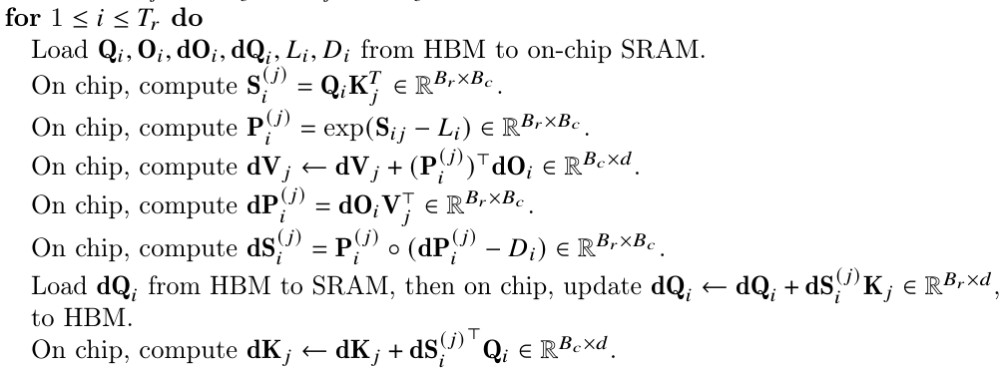
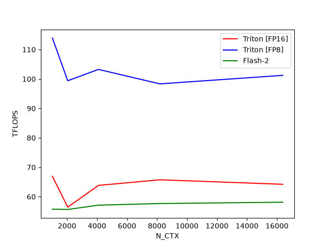
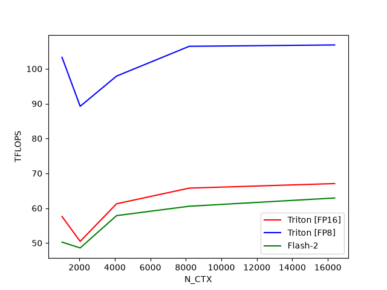
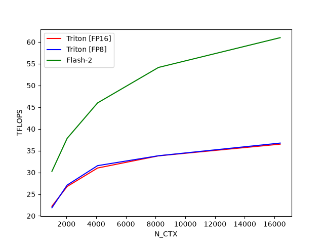
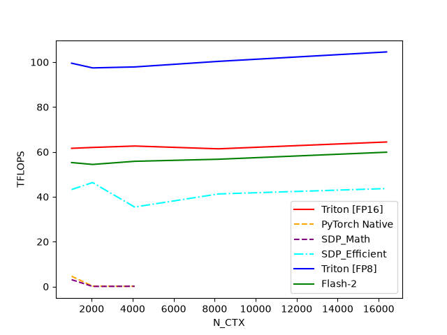
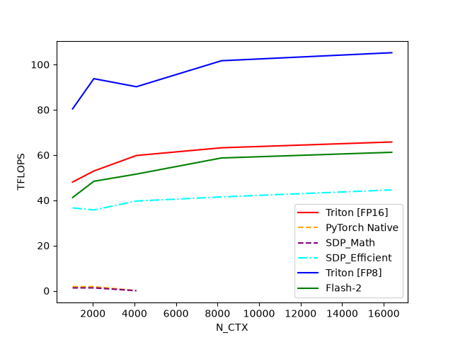
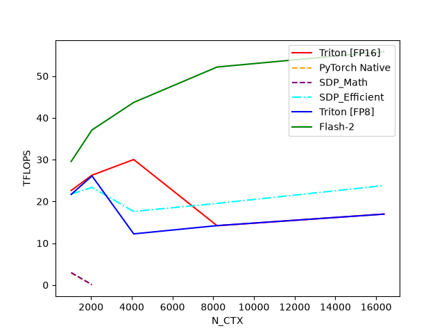
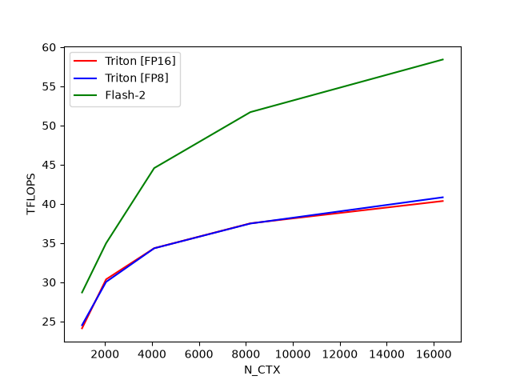
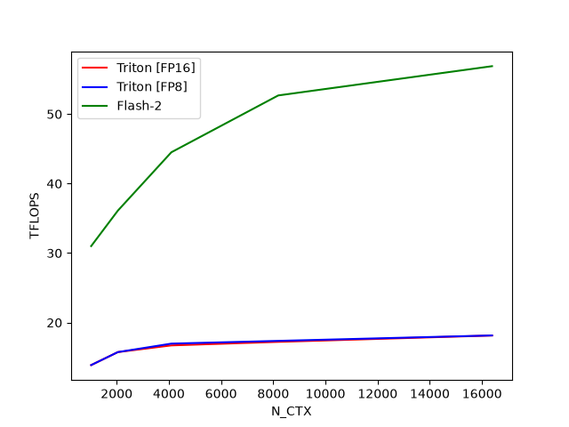

用Triton实现FlashAttention反向算法¶
学习目标¶
- 用Triton实现FlashAttention的反向算法
1. backward函数¶
1.1 代码¶
本节的完整代码在triton-lab/fused-attention_simple.py。
@staticmethod
def backward(ctx, do):
q, k, v, o, M = ctx.saved_tensors
assert do.is_contiguous()
assert q.stride() == k.stride() == v.stride() == o.stride() == do.stride()
dq = torch.empty_like(q)
dk = torch.empty_like(k)
dv = torch.empty_like(v)
BATCH, N_HEAD, N_CTX = q.shape[:3]
PRE_BLOCK = 128
NUM_WARPS, NUM_STAGES = 4, 5
BLOCK_M1, BLOCK_N1, BLOCK_M2, BLOCK_N2 = 32, 128, 128, 32
BLK_SLICE_FACTOR = 2
RCP_LN2 = 1.4426950408889634 # = 1.0 / ln(2)
arg_k = k
arg_k = arg_k * (ctx.sm_scale * RCP_LN2)
PRE_BLOCK = 128
assert N_CTX % PRE_BLOCK == 0
pre_grid = (N_CTX // PRE_BLOCK, BATCH * N_HEAD)
delta = torch.empty_like(M)
_attn_bwd_preprocess[pre_grid](
o, do, #
delta, #
BATCH, N_HEAD, N_CTX, #
BLOCK_M=PRE_BLOCK, HEAD_DIM=ctx.HEAD_DIM #
)
grid = (N_CTX // BLOCK_N1, 1, BATCH * N_HEAD)
_attn_bwd[grid](
q, arg_k, v, ctx.sm_scale, do, dq, dk, dv, #
M, delta, #
q.stride(0), q.stride(1), q.stride(2), q.stride(3), #
N_HEAD, N_CTX, #
BLOCK_M1=BLOCK_M1, BLOCK_N1=BLOCK_N1, #
BLOCK_M2=BLOCK_M2, BLOCK_N2=BLOCK_N2, #
BLK_SLICE_FACTOR=BLK_SLICE_FACTOR, #
HEAD_DIM=ctx.HEAD_DIM, #
num_warps=NUM_WARPS, #
num_stages=NUM_STAGES #
)
return dq, dk, dv, None, None
1.2 代码解读¶
1.2.1. 保存张量与内存连续性校验¶
q, k, v, o, M = ctx.saved_tensors
assert do.is_contiguous()
assert q.stride() == k.stride() == v.stride() == o.stride() == do.stride()
ctx.saved_tensors：获取在前向传播（Forward pass）中保存的张量：q,k,v：输入的 Query、Key、Value。o：前向传播计算出的注意力输出 Output。M：前向传播保存的 LogSumExp 归一化系数（用于在反向传播中重构 Softmax 分布，避免保存全量的 N \times N 注意力权重矩阵，大幅省显存）。
do：从下一层反向传播传过来的梯度（即 \frac{\partial L}{\partial O}）。assert：校验do在内存中是否连续，以及 Q, K, V, O, \text{d}O 的内存布局（Stride）是否完全一致，以确保 GPU Triton Kernel 能够使用统一的指针步长进行高效访存。
1.2.2. 梯度张量申请与参数配置¶
dq = torch.empty_like(q)
dk = torch.empty_like(k)
dv = torch.empty_like(v)
BATCH, N_HEAD, N_CTX = q.shape[:3]
PRE_BLOCK = 128
NUM_WARPS, NUM_STAGES = 4, 5
BLOCK_M1, BLOCK_N1, BLOCK_M2, BLOCK_N2 = 32, 128, 128, 32
BLK_SLICE_FACTOR = 2
RCP_LN2 = 1.4426950408889634 # = 1.0 / ln(2)
dq, dk, dv：为 Q, K, V 分配与原张量形状、类型一致的梯度输出内存。- 分块与性能超参数 (Tuning Hyperparameters)：
BLOCK_M1, BLOCK_N1, BLOCK_M2, BLOCK_N2：定义反向传播中对序列长度（Sequence Length/N_CTX）分块（Tiling）的大小。因为反向传播既要对 Q 求导又要对 K, V 求导，所以需要两组不同的 Block 尺寸组合来优化不同方向上的计算/访存流水线。NUM_WARPS, NUM_STAGES：Triton 编译器的优化参数（GPU Warp 数量以及流水线 Stage 数）。
RCP_LN2：即 \frac{1}{\ln 2}，用于以 2 为底的指数计算（底数转换），因为硬件底层（如 NVIDIA Tensor Core）执行 2^x 比 e^x 更快速高效。
1.2.3. Key 的缩放缩放预处理¶
arg_k = k
arg_k = arg_k * (ctx.sm_scale * RCP_LN2)
- 在 Softmax 注意力中，公式通常为 \text{Softmax}\left(\frac{Q K^T}{\sqrt{d}}\right)。
- 这里将缩放因子
ctx.sm_scale（通常为 \frac{1}{\sqrt{d}}）与底数转换常量RCP_LN2直接提前乘到 K 上，从而在 Triton 内部计算 Q K^T 时减少重复计算。
1.2.4. 预处理 Kernel：计算 \Delta (Delta)¶
PRE_BLOCK = 128
assert N_CTX % PRE_BLOCK == 0
pre_grid = (N_CTX // PRE_BLOCK, BATCH * N_HEAD)
delta = torch.empty_like(M)
_attn_bwd_preprocess[pre_grid](
o, do, #
delta, #
BATCH, N_HEAD, N_CTX, #
BLOCK_M=PRE_BLOCK, HEAD_DIM=ctx.HEAD_DIM #
)
- 作用：根据 FlashAttention 算法论文（Dao et al.），反向传播需要计算一个中间项：
这里用一个轻量级的预处理 Kernel _attn_bwd_preprocess 来按 Block 逐元素计算 O \cdot \text{d}O 并按行求和。
* pre_grid：并行网格形状。在序列长度维度切分 N_CTX // PRE_BLOCK 个块，批次和多头维度展平为 BATCH * N_HEAD。
1.2.5. 主反向传播 Kernel：计算 \text{d}Q, \text{d}K, \text{d}V¶
grid = (N_CTX // BLOCK_N1, 1, BATCH * N_HEAD)
_attn_bwd[grid](
q, arg_k, v, ctx.sm_scale, do, dq, dk, dv, #
M, delta, #
q.stride(0), q.stride(1), q.stride(2), q.stride(3), #
N_HEAD, N_CTX, #
BLOCK_M1=BLOCK_M1, BLOCK_N1=BLOCK_N1, #
BLOCK_M2=BLOCK_M2, BLOCK_N2=BLOCK_N2, #
BLK_SLICE_FACTOR=BLK_SLICE_FACTOR, #
HEAD_DIM=ctx.HEAD_DIM, #
num_warps=NUM_WARPS, #
num_stages=NUM_STAGES #
)
- 作用：启动主要的反向传播 Triton Kernel
_attn_bwd。 - 它利用分块（Tiling）和重计算（Recomputation）策略，在不显式存储完整的 N \times N 注意力矩阵的前提下，高效地计算出
dq、dk和dv。 - 参数中传入了张量的 Stride（步长）、网络维度、Block 大小配置以及保存的
M和刚刚计算出的delta。
1.2.6. 返回结果¶
return dq, dk, dv, None, None
- 根据 PyTorch
autograd.Function的规范，backward方法返回的梯度列表必须与forward方法接收的输入参数一一对应： 1.dq：对应 Q 的梯度 2.dk：对应 K 的梯度 3.dv：对应 V 的梯度 4.None：对应sm_scale（标量/非张量参数，无需梯度） 5.None：对应其他配置参数（无需梯度）
1.2.7 总结¶
这段代码是 FlashAttention 反向传播在 Triton 中的典型实现封装。它的关键设计在于：
- 省显存：不需要存完整 Attention 权重矩阵，利用前向存出的
M(LogSumExp) 在反向中重新构建 Softmax 值。 - 两阶段 Kernel：先用轻量级 Kernel 预计算 \Delta = \sum (O \circ \text{d}O)，再用主 Kernel 块状重计算并更新 \text{d}Q, \text{d}K, \text{d}V。
- 针对硬件优化：使用针对 Block 切片、底数转换（
RCP_LN2）以及 Triton 的num_warps/num_stages参数配置，达到逼近 CUDA 原生性能的效果。
1.3 为什么 HEAD_DIM=ctx.HEAD_DIM？¶
仔细的同学可能会发现：
BATCH, N_HEAD, N_CTX = q.shape[:3]
_attn_bwd_preprocess[pre_grid](
o, do, #
delta, #
BATCH, N_HEAD, N_CTX, #
BLOCK_M=PRE_BLOCK, HEAD_DIM=ctx.HEAD_DIM #
)
其实q.shape的最后一个值就是HEAD_DIM，为什么BATCH, N_HEAD, N_CTX可以通过q.shape[:3]获取，而HEAD_DIM却要通过ctx.HEAD_DIM获取呢？
这么做的主要原因是：Triton 算子编译的静态常量优化。
Triton 内核编译时极度依赖 HEAD_DIM 的静态已知性（Static Specialization）：
- GPU 的 Shared Memory（SRAM）分配、向量化加载指令（如
tl.load一次读取 128 位/256 位）、以及 Tile 的 Block 布局映射，都需要在 编译 Triton Kernel 脚本时就知道HEAD_DIM的精确数值（例如 64, 128, 256）。 - 通过将
ctx.HEAD_DIM作为编译期 constexpr / meta-parameter 显式传入（或者作为固定的配置参数传递），Triton 编译器可以自动针对特定的HEAD_DIM生成极度优化的机器码（例如根据HEAD_DIM=64或128自动做 Unroll 展开和向量化对齐）。 - 如果直接取
q.shape[3]，它在 Python 运行时层只是一个普通的动态 Tensor 维度，不如前向传播中已经显式验证并标记好的ctx.HEAD_DIM明确。
1.4 使用 tl.exp2 替代 tl.exp 带来的差异¶
1.4.1 代码逻辑逐行解析¶
RCP_LN2 = 1.4426950408889634 # = 1.0 / ln(2)
arg_k = k
arg_k = arg_k * (ctx.sm_scale * RCP_LN2)
RCP_LN2(Reciprocal of \ln 2)： 常数 \frac{1}{\ln 2} \approx 1.4426950408889634。ctx.sm_scale： Softmax 缩放因子（通常为 \frac{1}{\sqrt{d_{\text{head}}}}）。arg_k的变换： 将原始的 Key 提前乘以(sm_scale * RCP_LN2)。后续在 Kernel 内部计算 Q \cdot K^T 时，提取出来的整体缩放项就不再是纯粹的 \text{sm_scale}，而是包含了 \frac{1}{\ln 2} 的因子。
1.4.2 为什么要乘以 RCP_LN2？（数学原理）¶
Softmax 的核心计算包含自然指数函数 e^x：
利用对数换底公式 a^x = e^{x \cdot \ln a}，我们可以将以 e 为底的指数运算转换为以 2 为底的指数运算：
将 y = S \cdot \text{sm_scale} 代入上式：
为了避免在 Kernel 循环内部每次计算得分 S = Q \cdot K^T 时都重复乘以 \frac{1}{\ln 2}，代码选择 在传入 Kernel 之前，直接将该常数预先乘到向量 K 上：
这样，Kernel 内部只需要计算 Q \cdot \text{arg_k}^T，并直接调用 2^x（即 tl.exp2），就能在数学上完全等价地还原出 Softmax 的指数权重。
1.4.3 使用 tl.exp2 替代 tl.exp 带来哪些不同？¶
在 GPU 编程（Triton / CUDA）中，使用 tl.exp2（对应底层硬件指令 EX2）替代 tl.exp 带来以下 三个维度的不同：
1.4.3.1. 硬件执行效率与吞吐量（Performance & Instruction Count）¶
tl.exp的底层实现： NVIDIA GPU 硬件原生的 Special Function Unit (SFU) 或 Tensor Core 主要针对 2^x 和 \log_2 x 做了硬件级的管线电路优化。 当你在代码中编写tl.exp(x)时，编译器（如 PTX / NVVM）通常会将其编译为：
tl.exp2的优势： 直接使用tl.exp2(x)能够 省去指令级的标量乘法转化。通过在 Python 主控端将 \text{RCP_LN2} 预先融合进 K 中，GPU 循环体内只需要执行纯粹的硬件级 2^x 指令，极大减少了寄存器压力与 ALU 指令数量，提升了 Kernel 的计算吞吐量。
1.4.3.2. 数值精度（Numerical Precision）¶
tl.exp：GPU 在内部做指数拟合时，exp(x)的精细多项式展开在输入较大或较小时可能累积微小的浮点舍入误差。tl.exp2：由于现代 GPU 的 SFU（Special Function Unit）硬件指令直接支持 IEEE-754 规范下的 2^x 快速近似（如 CUDA 中的MUFU.EX2指令），其在硬件级别的相对误差极小。配合 FlashAttention 的 LogSumExp 减去最大值（\text{max_val}）防溢出技巧，使用 2^{x - x_{\max}} 比 e^{x - x_{\max}} 更加稳定且精准。
1.4.3.3. 与前向传播的一致性（Consistency）¶
- 在 FlashAttention 前向传播中，通常同样采用了基于 2^x 的优化方案（存出的归一化因子 M 和 L 均建立在 base-2 的基础上）。
- 在反向传播（Backward Pass）中，重构 Softmax 矩阵和计算梯度 \text{d}Q, \text{d}K, \text{d}V 时，必须使用与前向完全一致的底数 2 和相应的 LogSumExp，才能保证链式法则求导的 数值完全对齐，避免由于底数转换带来的精度漂移。
1.4.4 总结对比¶
| 维度 | tl.exp(x) |
tl.exp2(x) + 预乘 RCP_LN2 |
|---|---|---|
| 数学公式 | e^x | 2^{x \cdot \log_2 e} |
| 硬件指令 | 需先乘以 \log_2 e，再调用 EX2 |
直接映射为硬件原生 EX2 指令 |
| 指令开销 | 循环内多一次乘法操作 | 零额外开销（乘法已被提至主控端预处理） |
| 适用场景 | 普通科学计算 | FlashAttention 等高吞吐算子极尽性能优化的场景 |
1.5 换底之后，梯度的计算需要修改吗？¶
1.5.1 数学层面：换底之后，梯度的表达式有变化吗？¶
结论：在数学形式上，没有任何变化。
在前向传播中，注意力权重 P_{ij} 采用了换底公式：
在反向传播计算损失函数对得分 S_{ij} 的梯度 \frac{\partial L}{\partial S_{ij}}（即 dS_{ij}）时，根据指数求导法则 (2^x)' = 2^x \cdot \ln 2：
\ln 2 与换底缩放因子 \frac{1}{\ln 2} 在求导过程中正好完全抵消！
因此，最终推导出的 Attention 得分梯度 dS_{ij} 依然是：
这与使用自然指数 e^x 推导出的数学公式完全一致。
1.5.2 工程实现层面：计算 dQ, dK, dV 时做了哪些特殊处理？¶
虽然数学公式抵消了，但在 Triton 算子实现中，为了 把乘法移出 GPU 内层 Hot-Loop 以提升吞吐量，代码在传入 Kernel 前将 K 预处理为了：
这就导致在 Kernel 内部累加 dQ, dK, dV 时，需要做出对应的“防失真/缩放对齐”处理：
1.5.2.1. 计算 dV：无需任何额外缩放¶
- 过程：在 Kernel 内利用 2^{S - M} 重构出注意力矩阵 P，直接与 dO 做点积累加：
- 处理：由于 V 和 dO 未参与换底预缩放，计算出的 dV 就是最终的物理梯度，结尾无需做任何处理，直接写回显存。
1.5.2.2. 计算 dK：结尾乘 sm_scale¶
- 过程：计算 dK 的子函数
_attn_bwd_dkdv(后面才会介绍) 在内层循环中，使用的是 dS^T 点乘 原始未缩放的 Q：
- 处理：由于循环内部点乘的是原始 Q，只缺少物理缩放因子 \text{sm_scale}，因此在 Kernel 结尾写回显存前执行：
dk *= sm_scale # 补充乘上注意力缩放系数 1/sqrt(d)
1.5.2.3. 计算 dQ：结尾乘 LN2（\ln 2）¶
- 过程：计算 dQ 的子函数
_attn_bwd_dq为了复用内存/寄存器，内层循环直接加载了 Python 端传进来的arg_k（即 K \cdot \text{sm_scale} \cdot \frac{1}{\ln 2}） 进行点积累加：
- 处理：因为循环内部累加的值里多包含了 \frac{1}{\ln 2} 因子，为了还原出正确的物理梯度，在 Kernel 结尾写回显存前必须执行一次乘法将其抵消：
dq *= LN2 # 即 dq = dq * ln(2)，正好与内层循环中的 1/ln(2) 相互抵消！
抵消后，写回显存的 dQ 恰好等于：
1.5.3 总结对照¶
| 变量 | 内层循环点乘的张量 | 循环累加值中的隐式系数 | 结尾处的处理代码 | 最终写回显存的真实梯度 |
|---|---|---|---|---|
dV |
dO (原始) | 1 | 无 | \sum P^T \cdot dO |
dK |
Q (原始) | 1 | dk *= sm_scale |
\left(\sum dS^T \cdot Q\right) \cdot \text{sm_scale} |
dQ |
arg_k (K \cdot \text{sm_scale} \cdot \frac{1}{\ln 2}) |
\text{sm_scale} \cdot \frac{1}{\ln 2} | dq *= LN2 |
\left(\sum dS \cdot K\right) \cdot \text{sm_scale} |
这种“Host 端预乘 \frac{1}{\ln 2} \rightarrow Kernel 循环体高吞吐计算 \rightarrow 结尾乘 \ln 2 抵消”的巧妙设计，既享受了 GPU 硬件指令执行 2^x（tl.exp2）的高吞吐优势，又保证了链式法则求导的数值精准无误。
2. Triton实现和FlashAttention论文的差别¶
2.1 FlashAttention V2的实现¶
我们再次回顾一下FlashAttention V2的反向算法：

如果我们仔细看dq,dk,dv的公式，可以发现，dk和dv的外层循环下标是j，然后对于每一个j，内层循环是i。对应到代码就是外层循环加载K_j和V_j块。内层循环是加载Q_i块。
对于一个固定的j，也就是固定的K_j和V_j，只需要内层循环一次，那么就会遍历所有的Q_i，就可以把dk和dv在共享内存完成所有计算，最后一次性写的HBM里。
而dq的下标正好反过来，对于固定的i=2，比如dq_2，外层循环的第一次(j=1)，我们只能计算dq_2和K_1的梯度(S_21 = Q_2K_1^T)，计算完成后无法放在SRAM里，所以需要累加到HBM里。然后等到第二次外层循环(j=2)，并且内层循环i=2时计算dq_2和K_2的梯度(S_22 = Q_2K_2^T)，同样先需要从HBM加载之前的值，然后累加进去，最后写的HBM。
这和FlashAttention V1的前向算法是类似的。如果我们想在序列长度的维度进行并行(也就是展开外层循环)，就需要使用atomicAdd避免多个线程同时写HBM的相同位置。因为第一个线程可能在计算dq_2和K_1的梯度，而第二个线程可能在计算dq_2和K_2的梯度，它们需要读写相同的dq_2，如果不用atomicAdd，那就会出错。
2.2 Triton官方教程的实现¶
而在Triton官方教程里，使用了不一样的方法。它计算dk和dv的方法跟论文一样，但是计算dq时，使用另外一个单独的函数来实现，也就是多跑了一趟：第二趟的两重循环反了过来，外层循环是加载一个固定的Q_i，然后内层循环是遍历K_j和V_j。这样做的好处就是不需要反复的写入HBM和使用atomicAdd了。不过这样做的问题是一些中间结果S_{ij} = Q_i K_j^T需要被重复计算。比如S_{12}，在第一趟外层循环j=2和内层循环i=1时计算了一次；在第二趟外层循环i=1和内层循环j=2时又计算了一次。
2.3 举例对比¶
我们还是用之前的CUDA版本的测试例子来距离。
2.3.1 矩阵分块初始化¶
根据数据，我们将矩阵切分为以下子块（设缩放系数 \text{scale} = 1 以简化数值计算）：
2.3.1.1. Q 矩阵 (6×2) \rightarrow 2个块 (3 \times 2)¶
2.3.1.2. K 矩阵 (6×2) \rightarrow 3个块 (2 \times 2)¶
2.3.1.3. V 矩阵 (6×2) \rightarrow 3个块 (2 \times 2)¶
2.3.1.4. 上游梯度 dO (6×2) \rightarrow 2个块 (3 \times 2)（设全为 1 方便推导）¶
2.3.2 算法 A：FlashAttention 官方实现（KV 外循环 + HBM 累加）¶
在算法 A 中，外层循环遍历 KV 块 (j = 1, 2, 3)，内层循环遍历 Q 块 (i = 1, 2)。每次计算出的 dQ 片段会 立即累加写入 HBM 的 mdQaccum 缓冲区。
2.3.2.1 Step 1: 处理外层 KV 块 j = 1 (K_1, V_1)¶
- 与 Q_1 交互 (i=1)：
- 计算得分子块 S_{11} = Q_1 K_1^T = \begin{bmatrix} 1 & 0 \\ 0 & 2 \\ 1 & 1 \end{bmatrix} \begin{bmatrix} 1 & 2 \\ 1 & 0 \end{bmatrix} = \begin{bmatrix} 1 & 1 \\ 2 & 0 \\ 2 & 1 \end{bmatrix} （注：此处 K_1^T = \begin{bmatrix} 1 & 2 \\ 1 & 0 \end{bmatrix}）
- 经过 Softmax 得到 P_{11}，计算 dP_{11} = dO_1 V_1^T，并求出 dQ 的第一部分贡献片：
- 与 Q_2 交互 (i=2)：
- 计算 S_{21} = Q_2 K_1^T，得到 P_{21}，计算 dQ 的贡献片：
- HBM 动作：将 dQ_{1, \text{part1}} 和 dQ_{2, \text{part1}} 写入并累加到 HBM 的
mdQaccum中。同时在片上累加 dK_1, dV_1。
2.3.2.2 Step 2: 处理外层 KV 块 j = 2 (K_2, V_2)¶
- 分别与 Q_1, Q_2 计算交互，得到 dS_{12}, dS_{22}。
- 计算出对应的 dQ 片段：
- HBM 动作：将这两个片段 再次累加写入 HBM 的
mdQaccum（此时 HBM 中对应位置自动执行mdQaccum += dQ_part2）。
2.3.2.3 Step 3: 处理外层 KV 块 j = 3 (K_3, V_3)¶
- 分别与 Q_1, Q_2 计算交互，得到 dS_{13}, dS_{23}。
- 计算出对应的 dQ 片段：
- HBM 动作：第三次 累加写入 HBM 的
mdQaccum。
算法 A 结束时：HBM 的
mdQaccum中存储的最终结果为： * dQ_1^{\text{HBM}} = dQ_{1, \text{part1}} + dQ_{1, \text{part2}} + dQ_{1, \text{part3}} = \sum_{j=1}^3 dS_{1j} K_j * dQ_2^{\text{HBM}} = dQ_{2, \text{part1}} + dQ_{2, \text{part2}} + dQ_{2, \text{part3}} = \sum_{j=1}^3 dS_{2j} K_j
2.3.3 算法 B：Triton/独立循环风格（Q 导向或独立计算）¶
在算法 B 中，我们以 Q 块为核心（或在理想的单次完整遍历中），直接去求完整的 dQ_1 和 dQ_2：
- 计算 dQ_1（必须把所有 KV 块 j=1, 2, 3 对 Q_1 的影响全部加起来）：
- 计算 dQ_2（把所有 KV 块对 Q_2 的影响加起来）：
2.4 核心结论：为什么它们数学结果完全一样？¶
对比上述两套过程：
| 维度 / 比较项 | 算法 A (FA2 官方：KV 外循环 + HBM 累加) | 算法 B (Triton 风格 / 独立循环) |
|---|---|---|
| 计算顺序 | 外层循环 j（KV 块），内层循环 i（Q 块） | 外层循环 i（Q 块），内层循环 j（KV 块） |
| 中间状态处理 | 分片计算出 dS_{ij} K_j 后，立刻写入 HBM 的 mdQaccum 做累加 |
在寄存器或片上完成所有 j 的累加后，一次性写回最终 dQ |
| 最终数学表达式 | dQ_1 = (dS_{11}K_1 + dS_{12}K_2 + dS_{13}K_3) | dQ_1 = (dS_{11}K_1 + dS_{12}K_2 + dS_{13}K_3) |
根据矩阵乘法的 分配律：
无论你是“先算完所有 KV 块对某个 Q 块的贡献再相加”（算法 B），还是“来一个 KV 块就把它对所有 Q 块的贡献往 HBM 里累加一次”（算法 A），它们在数学上都是对同一个矩阵求和公式的展开。
因此，最终写入 HBM 的 mdQaccum 数值与算法 B 直接计算出的 dQ 结果在数学上是百分之百等价、完全相同的。FA2 采用算法 A 只是为了避开寄存器溢出，用可控的 HBM 写入换取了极高的硬件并发效率。
那么具体哪种方法好呢？后面我们做实验来对比验证。
3. _attn_bwd_preprocess函数¶
我们首先来看第一个核函数，它提前把D_i计算好放到HBM，供下一个核函数使用。
3.1 代码¶
说明：原始代码的变量命名太差了，我稍微做了一些修改。
@triton.jit
def _attn_bwd_preprocess(O, DO, #
Delta, #
Z, H, N_CTX, #
BLOCK_M: tl.constexpr, HEAD_DIM: tl.constexpr #
):
off_m = tl.program_id(0) * BLOCK_M + tl.arange(0, BLOCK_M)
batch_head = tl.program_id(1)
off_n = tl.arange(0, HEAD_DIM)
# load
o = tl.load(O + batch_head * HEAD_DIM * N_CTX + off_m[:, None] * HEAD_DIM + off_n[None, :])
do = tl.load(DO + batch_head * HEAD_DIM * N_CTX + off_m[:, None] * HEAD_DIM + off_n[None, :]).to(tl.float32)
delta = tl.sum(o * do, axis=1)
# write-back
tl.store(Delta + batch_head * N_CTX + off_m, delta)
3.2 代码解读¶
@triton.jit
def _attn_bwd_preprocess(O, DO, #
Delta, #
Z, H, N_CTX, #
BLOCK_M: tl.constexpr, HEAD_DIM: tl.constexpr #
):
- 参数说明：
O：前向传播的输出矩阵 O。DO：上游梯度 dO。Delta：输出张量，用来保存计算好的 D_i（即代码中的delta）。Z, H, N_CTX：分别为 Batch 大小、Head 数量、序列长度。BLOCK_M, HEAD_DIM：分块大小（每个线程块处理的 Query 行数）和隐层维度。
off_m = tl.program_id(0) * BLOCK_M + tl.arange(0, BLOCK_M)
batch_head = tl.program_id(1)
off_n = tl.arange(0, HEAD_DIM)
- 索引计算：
off_m：当前线程块（CTA）负责的 Query 行索引范围（大小为BLOCK_M）。batch_head：当前线程块负责的 Batch 和 Head 组合索引（tl.program_id(1)通常由Batch * Head展开）。off_n：隐层维度的列索引（0到HEAD_DIM - 1）。
# load
o = tl.load(O + batch_head * HEAD_DIM * N_CTX + off_m[:, None] * HEAD_DIM + off_n[None, :])
do = tl.load(DO + batch_head * HEAD_DIM * N_CTX + off_m[:, None] * HEAD_DIM + off_n[None, :]).to(tl.float32)
- 数据加载：
- 根据
batch_head和off_m，从 HBM 中加载当前块的 O 和 dO 矩阵。 do被显式转换为了tl.float32精度，以保证反向传播累加时的数值稳定性。
- 根据
delta = tl.sum(o * do, axis=1)
- 核心数学计算：
o * do：对应位置相乘（Element-wise multiplication）。tl.sum(..., axis=1)：在HEAD_DIM维度（axis=1）上进行求和。- 结果：对于
BLOCK_M中的每一行，计算出其对应向量的内积。这正是公式 \text{D}_i = \sum_k O_{ik} \cdot dO_{ik}。计算完成后，delta的形状变为(BLOCK_M,)。
# write-back
tl.store(Delta + batch_head * N_CTX + off_m, delta)
- 写回结果：
- 将计算好的
delta（dP_{\text{sum}}）写回到全局内存的Delta数组中，供后续的_attn_bwd内核直接读取使用。
- 将计算好的
4. _attn_bwd函数¶
4.1 代码¶
@triton.jit
def _attn_bwd(Q, K, V, sm_scale, #
DO, #
DQ, DK, DV, #
M, D,
# shared by Q/K/V/DO.
stride_batch, stride_head, stride_seq, stride_dim, #
H, SEQ_LEN, #
BLOCK_M1: tl.constexpr, #
BLOCK_N1: tl.constexpr, #
BLOCK_M2: tl.constexpr, #
BLOCK_N2: tl.constexpr, #
BLK_SLICE_FACTOR: tl.constexpr, #
HEAD_DIM: tl.constexpr):
LN2: tl.constexpr = 0.6931471824645996 # = ln(2)
batch_head_idx = tl.program_id(2)
batch_idx = batch_head_idx // H
head_idx = batch_head_idx % H
bh_offset = (stride_head * head_idx + stride_batch * batch_idx).to(tl.int64)
bh_seq_offset = (batch_head_idx * SEQ_LEN).to(tl.int64)
pid = tl.program_id(0)
# offset pointers for batch/head
Q += bh_offset
K += bh_offset
V += bh_offset
DO += bh_offset
DQ += bh_offset
DK += bh_offset
DV += bh_offset
M += bh_seq_offset
D += bh_seq_offset
# load scales
offs_dim = tl.arange(0, HEAD_DIM)
start_n = pid * BLOCK_N1
start_m = start_n
MASK_BLOCK_M1: tl.constexpr = BLOCK_M1 // BLK_SLICE_FACTOR
offs_n = start_n + tl.arange(0, BLOCK_N1)
dv = tl.zeros([BLOCK_N1, HEAD_DIM], dtype=tl.float32)
dk = tl.zeros([BLOCK_N1, HEAD_DIM], dtype=tl.float32)
# load K and V: they stay in SRAM throughout the inner loop.
k = tl.load(K + offs_n[:, None] * stride_seq + offs_dim[None, :] * stride_dim)
v = tl.load(V + offs_n[:, None] * stride_seq + offs_dim[None, :] * stride_dim)
num_steps = BLOCK_N1 // MASK_BLOCK_M1
dk, dv = _attn_bwd_dkdv(dk, dv, #
Q, k, v, sm_scale, #
DO, #
M, D, #
stride_seq, stride_dim, #
H, SEQ_LEN, #
MASK_BLOCK_M1, BLOCK_N1, HEAD_DIM, #
start_n, start_m, num_steps, #
MASK=True #
)
start_m += num_steps * MASK_BLOCK_M1
num_steps = (SEQ_LEN - start_m) // BLOCK_M1
# Compute dK and dV for non-masked blocks.
dk, dv = _attn_bwd_dkdv( #
dk, dv, #
Q, k, v, sm_scale, #
DO, #
M, D, #
stride_seq, stride_dim, #
H, SEQ_LEN, #
BLOCK_M1, BLOCK_N1, HEAD_DIM, #
start_n, start_m, num_steps, #
MASK=False #
)
dv_ptrs = DV + offs_n[:, None] * stride_seq + offs_dim[None, :] * stride_dim
tl.store(dv_ptrs, dv)
# Write back dK.
dk *= sm_scale
dk_ptrs = DK + offs_n[:, None] * stride_seq + offs_dim[None, :] * stride_dim
tl.store(dk_ptrs, dk)
# THIS BLOCK DOES DQ:
start_m = pid * BLOCK_M2
end_n = start_m + BLOCK_M2
MASK_BLOCK_N2: tl.constexpr = BLOCK_N2 // BLK_SLICE_FACTOR
offs_m = start_m + tl.arange(0, BLOCK_M2)
q = tl.load(Q + offs_m[:, None] * stride_seq + offs_dim[None, :] * stride_dim)
dq = tl.zeros([BLOCK_M2, HEAD_DIM], dtype=tl.float32)
do = tl.load(DO + offs_m[:, None] * stride_seq + offs_dim[None, :] * stride_dim)
m = tl.load(M + offs_m)
m = m[:, None]
# Compute dQ for masked (diagonal) blocks.
# NOTE: This code scans each row of QK^T backward (from right to left,
# but inside each call to _attn_bwd_dq, from left to right), but that's
# not due to anything important. I just wanted to reuse the loop
# structure for dK & dV above as much as possible.
num_steps = BLOCK_M2 // MASK_BLOCK_N2
dq = _attn_bwd_dq(dq, q, K, V, #
do, m, D, #
stride_seq, stride_dim, #
H, SEQ_LEN, #
BLOCK_M2, MASK_BLOCK_N2, HEAD_DIM, #
start_m, end_n - num_steps * MASK_BLOCK_N2, num_steps, #
MASK=True #
)
end_n -= num_steps * MASK_BLOCK_N2
# stage 2
num_steps = end_n // BLOCK_N2
dq = _attn_bwd_dq(dq, q, K, V, #
do, m, D, #
stride_seq, stride_dim, #
H, SEQ_LEN, #
BLOCK_M2, BLOCK_N2, HEAD_DIM, #
start_m, end_n - num_steps * BLOCK_N2, num_steps, #
MASK=False #
)
# Write back dQ.
dq_ptrs = DQ + offs_m[:, None] * stride_seq + offs_dim[None, :] * stride_dim
dq *= LN2
tl.store(dq_ptrs, dq)
4.2 代码解读¶
4.2.1 初始化与指针偏移¶
@triton.jit
def _attn_bwd(Q, K, V, sm_scale, DO, DQ, DK, DV, M, D,
stride_batch, stride_head, stride_seq, stride_dim,
H, SEQ_LEN,
BLOCK_M1: tl.constexpr, BLOCK_N1: tl.constexpr,
BLOCK_M2: tl.constexpr, BLOCK_N2: tl.constexpr,
BLK_SLICE_FACTOR: tl.constexpr, HEAD_DIM: tl.constexpr):
LN2: tl.constexpr = 0.6931471824645996 # = ln(2)
- 函数签名：接收输入张量（Q, K, V, dO, M, D）、输出梯度张量（dQ, dK, dV）、步长、维度以及各个分块常数（
constexpr）。LN2用于配合硬件原生的exp2还原数学导数。
batch_head_idx = tl.program_id(2)
batch_idx = batch_head_idx // H
head_idx = batch_head_idx % H
bh_offset = (stride_head * head_idx + stride_batch * batch_idx).to(tl.int64)
bh_seq_offset = (batch_head_idx * SEQ_LEN).to(tl.int64)
pid = tl.program_id(0)
# 偏移全局内存指针，定位到当前 Batch 和 Head
Q += bh_offset; K += bh_offset; V += bh_offset; DO += bh_offset
DQ += bh_offset; DK += bh_offset; DV += bh_offset
M += bh_seq_offset; D += bh_seq_offset
- 多维网格寻址：通过
tl.program_id(2)获取当前的批次与头组合索引，计算出对应的内存偏移量bh_offset（针对 2D 矩阵）和bh_seq_offset（针对 1D 序列统计量矩阵 M, D）。 pid = tl.program_id(0)：沿序列长度方向的线程块索引。在前半部分它决定 K/V 块，在后半部分它决定 Q 块。
4.2.2 计算并写回 dK 和 dV¶
offs_dim = tl.arange(0, HEAD_DIM)
start_n = pid * BLOCK_N1
start_m = start_n
MASK_BLOCK_M1: tl.constexpr = BLOCK_M1 // BLK_SLICE_FACTOR
offs_n = start_n + tl.arange(0, BLOCK_N1)
dv = tl.zeros([BLOCK_N1, HEAD_DIM], dtype=tl.float32)
dk = tl.zeros([BLOCK_N1, HEAD_DIM], dtype=tl.float32)
# 加载 K 和 V：在整个内层循环中它们常驻 SRAM
k = tl.load(K + offs_n[:, None] * stride_seq + offs_dim[None, :] * stride_dim)
v = tl.load(V + offs_n[:, None] * stride_seq + offs_dim[None, :] * stride_dim)
- KV-Stationary（KV 驻留）：线程块锁定一个大小为
BLOCK_N1的 K/V 块（由start_n决定），将其加载到寄存器/SRAM 中不动。 - 注意这里的
start_m = start_n：这意味着计算 dK/dV 时，内层循环的 Q 起点是从当前 K 块的位置开始的。在因果掩码下，直角三角形的对角线满足 m \ge n。
4.2.2.1 Stage 1: Masked 区域¶
num_steps = BLOCK_N1 // MASK_BLOCK_M1
dk, dv = _attn_bwd_dkdv(dk, dv,
Q, k, v, sm_scale, DO, M, D,
stride_seq, stride_dim, H, SEQ_LEN,
MASK_BLOCK_M1, BLOCK_N1, HEAD_DIM,
start_n, start_m, num_steps,
MASK=True # <--- 关键：处理掩码区域
)
- 为什么需要
MASK=True？- 在因果掩码（Causal Mask）下，当前 K/V 块所在的对角线邻近区域，部分 Q 位置是 不可见 的（即 m < n 或处于边界裁剪区）。
- 如果用大块去算，会超出因果矩阵的边界或包含无效的未来信息。因此，代码引入了
BLK_SLICE_FACTOR，把步长缩小为MASK_BLOCK_M1（即BLOCK_M1 // BLK_SLICE_FACTOR）。 MASK=True传入_attn_bwd_dkdv后，内部会针对这几步执行 边界检查和行掩码裁剪，确保只计算合法的三角形区域。
4.2.2.2 Stage 2: Non-masked 区域（安全区）¶
start_m += num_steps * MASK_BLOCK_M1
num_steps = (SEQ_LEN - start_m) // BLOCK_M1
# 计算非掩码区块的 dK 和 dV
dk, dv = _attn_bwd_dkdv(
dk, dv, Q, k, v, sm_scale, DO, M, D,
stride_seq, stride_dim, H, SEQ_LEN,
BLOCK_M1, BLOCK_N1, HEAD_DIM,
start_n, start_m, num_steps,
MASK=False # <--- 关键：进入完全可见的安全区
)
- 跨过对角线之后：一旦
start_m推进到对角线安全区（即当前 K 块之前的那些 Q 行，它们对当前 K 完全可见，m \ge n 恒成立），就不再需要做昂贵的逐元素掩码判断了。 - 此时将步长放大回全尺寸的
BLOCK_M1，设置MASK=False，以最大化 Tensor Core 的吞吐量。
dv_ptrs = DV + offs_n[:, None] * stride_seq + offs_dim[None, :] * stride_dim
tl.store(dv_ptrs, dv)
dk *= sm_scale
dk_ptrs = DK + offs_n[:, None] * stride_seq + offs_dim[None, :] * stride_dim
tl.store(dk_ptrs, dk)
- 累加完成后，将计算好的 dV 和 dK（乘以
sm_scale修正）写回显存。
4.2.3 关于Mask区域的例子¶
为了更清晰理解，我们通过一个具体的因果掩码（Causal Mask）二维坐标例子来拆解。
4.2.3.1 参数¶
假设我们有以下配置：
- \text{BLOCK_N1} = 128（当前 K/V 块的大小，代表 128 个 Token 的列区间）
- \text{BLOCK_M1} = 32（常规 Q 块的大小，代表 32 个 Token 的行区间）
- \text{BLK_SLICE_FACTOR} = 2（切片因子）
- 由此计算出掩码阶段的小块大小：
空间坐标定义：
- N 轴（列，代表 K/V）：当前线程块锁定的 K 块范围是 [\text{start_n}, \text{start_n} + 128)。为了方便举例，假设 \text{start_n} = 256。
- 即：当前 K 块覆盖的 Token 范围是 256 \sim 383。
- M 轴（行，代表 Q）：内层循环中 Q 的起点 \text{start_m} 初始时等于 \text{start_n}（即 256），然后逐步向下（向大坐标方向）推进。
在因果掩码中，合法的注意力区域是 下三角区（Row \ge Col），即 Q 的行号必须大于等于 K 的列号。
4.2.3.2 为什么分成 Mask 区和非 Mask 区？¶
1. 起点¶
假设我们的 K 块固定在 256 \sim 383，也就是pid=2的程序。因为BLOCK_M1=32，它可以被BLOCK_N1=128整除，所以Q的起点start_m可以直接跳到256，因为起点小于256的Q块都是无效的。注意：如果BLOCK_M1不能被BLOCK_N1整除，这个假设就不成立，比如BLOCK_M1=31，那么它的起点显然不能是256，起点必须是BLOCK_M1的整数倍。
2. 阶段一：Mask 区（对角线边界邻近区）¶
- 初始状态：\text{start_m} = 256。
- 计算步数：
- 这 8 步发生了什么？
- Q 的起点 \text{start_m} 从 256 开始，每次迈小步 \text{MASK_BLOCK_M1} = 16，连续走 8 步：
- 第 1 步：256 \sim 271
- 第 2 步：272 \sim 287
- ……
- 第 8 步：368 \sim 383
- 为什么必须加 Mask？ 在这个区间内，Q 的行号和当前 K 的列号交织在一起，刚好卡在因果掩码的“斜边（对角线）”上。有些 Q 行的行号 小于 某些 K 的列号（即 Row < Col），属于“未来信息”，必须被掩码屏蔽。如果不用小块（大小 16）去精细裁剪，就会把不该看见的未来信息算进去。
3. 阶段二：推进到分界点¶
当走完这 8 个小步后：
此时，\text{start_m} 的值变成了 384。
4.2.3.3 为什么 \text{start_m} = 384 之后就不用 Mask 了？¶
让我们看一下此时的几何相对位置：
- 当前 K 块的范围：256 \sim 383（即它的最大列号是 383）。
- 当前 Q 起点 \text{start_m}：384。
这意味着：此时此刻，内层循环接下来要处理的所有后续 Q 行，其行号全部 \ge 384。
- 对比当前 K 块的所有列（256 \sim 383）：
在因果掩码矩阵中，这意味着 当前 Q 块的所有行，位于当前 K 块的“正下方”。
- 全员合法：在这个区域里，每一个 Q 的行号都 大于 当前 K 块的所有列号（Row > Col 恒成立）。
- 不需要任何边界检查：所有的注意力权重都是 100% 有效的，不存在任何“未来信息”需要被裁剪。
- 安全区（Non-masked）：因此，代码直接把
MASK参数设为False，并且把步长从小心翼翼的小块（16）放大回满尺寸的大块（\text{BLOCK_M1} = 32），全速进行矩阵乘法加速。
4.2.4 计算并写回 dQ（同样的分段 Mask 逻辑）¶
# 切换视角：以 pid 作为 M 块的起点计算 dQ
start_m = pid * BLOCK_M2
end_n = start_m + BLOCK_M2
MASK_BLOCK_N2: tl.constexpr = BLOCK_N2 // BLK_SLICE_FACTOR
offs_m = start_m + tl.arange(0, BLOCK_M2)
q = tl.load(Q + offs_m[:, None] * stride_seq + offs_dim[None, :] * stride_dim)
dq = tl.zeros([BLOCK_M2, HEAD_DIM], dtype=tl.float32)
do = tl.load(DO + offs_m[:, None] * stride_seq + offs_dim[None, :] * stride_dim)
m = tl.load(M + offs_m); m = m[:, None]
- 线程块重新加载当前的 Q 块、上游梯度 dO 以及 LSE 统计量 m，准备计算 dQ。这里的视角变成了：固定一个 Q 块，去寻找所有与之交互的 K/V 块。
4.2.4.1 针对 dQ 的 Mask 阶段 1：MASK=True (对角线掩码区)¶
num_steps = BLOCK_M2 // MASK_BLOCK_N2
dq = _attn_bwd_dq(dq, q, K, V, do, m, D,
stride_seq, stride_dim, H, SEQ_LEN,
BLOCK_M2, MASK_BLOCK_N2, HEAD_DIM,
start_m, end_n - num_steps * MASK_BLOCK_N2, num_steps,
MASK=True # <--- 专门处理 Q 视角下的因果边界
)
end_n -= num_steps * MASK_BLOCK_N2
- dQ 的 Mask 逻辑：在因果掩码下，对于某个 Q 行，只有编号小于等于它的 K/V 才是有效的。
- 靠近对角线的这一小段 K/V 块（由
MASK_BLOCK_N2控制的小步长）处于边界上，必须开启MASK=True来过滤掉未来的无效 K/V。
说明：我不太了解为什么要搞出一个复杂的end_n来，其实就这个代码而言，end_n - num_steps * MASK_BLOCK_N2=start_m。因为：
end_n = start_m + BLOCK_M2
num_steps = BLOCK_M2 // MASK_BLOCK_N2
BLOCK_M2=128是MASK_BLOCK_N2=32的整数倍，那么显然有：
end_n - num_steps * MASK_BLOCK_N2 = end_n - BLOCK_M2 = start_m
也许是考虑BLOCK_M2=128不是MASK_BLOCK_N2=32的倍数？
4.2.4.2 针对 dQ 的 Mask 阶段 2：MASK=False (非掩码安全区)¶
num_steps = end_n // BLOCK_N2
dq = _attn_bwd_dq(dq, q, K, V, do, m, D,
stride_seq, stride_dim, H, SEQ_LEN,
BLOCK_M2, BLOCK_N2, HEAD_DIM,
start_m, end_n - num_steps * BLOCK_N2, num_steps,
MASK=False # <--- 完全可见的常规 K/V 块
)
- 进入安全区：对于那些位于当前 Q 行左侧、完全合法的历史 K/V 块，开启
MASK=False，使用大步长BLOCK_N2快速扫过，全力加速计算。
同样的，在BLOCK_M2=128是MASK_BLOCK_N2=32的整数倍的前提下，end_n - num_steps * BLOCK_N2=0。
# 写回 dQ
dq_ptrs = DQ + offs_m[:, None] * stride_seq + offs_dim[None, :] * stride_dim
dq *= LN2
tl.store(dq_ptrs, dq)
- 最后，将累加好的 dQ 乘以
LN2还原底数，并一次性写回全局内存。
4.2.5 总结：Mask 处理的设计哲学¶
在这段代码中，Mask 的处理体现了 “精细化裁剪 + 全速推进” 的思想：
- 两段式划分：无论算 dK/dV 还是 dQ，都把循环拆成了
MASK=True（精细切片，防越界/防未来信息） 和MASK=False（满块运行，大步加速）。 BLK_SLICE_FACTOR的作用：通过把大块动态切分为小块（如BLOCK_M1 // BLK_SLICE_FACTOR），完美契合了因果掩码斜边（对角线）不规则的几何形状，既保证了数学正确性，又最大限度地避免了无效计算。
4.2.5 补充说明¶
在这个代码里，假设SEQ_LEN是BLOCK_M1和BLOCK_M2的整数倍，所以没有处理行的mask。同时也假设HEAD_DIM是2的整数次幂，所以也没有列的mask处理。
另外，这个代码的反向算法只支持因果的Attention，不支持非因果的Attention。如果想看怎么实现非因果，请参考triton-lab/flash_attention.py，它来自https://github.com/hkproj/triton-flash-attention。
5. _attn_bwd_dkdv函数¶
5.1 代码¶
@triton.jit
def _attn_bwd_dkdv(dk, dv, #
Q, k, v, sm_scale, #
DO, #
M, D, #
# shared by Q/K/V/DO.
stride_seq, stride_dim, #
H, SEQ_LEN, BLOCK_M1: tl.constexpr, #
BLOCK_N1: tl.constexpr, #
HEAD_DIM: tl.constexpr, #
# Filled in by the wrapper.
start_n, start_m, num_steps, #
MASK: tl.constexpr):
offs_m = start_m + tl.arange(0, BLOCK_M1)
offs_n = start_n + tl.arange(0, BLOCK_N1)
offs_k = tl.arange(0, HEAD_DIM)
qT_ptrs = Q + offs_m[None, :] * stride_seq + offs_k[:, None] * stride_dim
do_ptrs = DO + offs_m[:, None] * stride_seq + offs_k[None, :] * stride_dim
# BLOCK_N1 must be a multiple of BLOCK_M1, otherwise the code wouldn't work.
tl.static_assert(BLOCK_N1 % BLOCK_M1 == 0)
curr_m = start_m
step_m = BLOCK_M1
for blk_idx in range(num_steps):
qT = tl.load(qT_ptrs)
# Load m before computing qk to reduce pipeline stall.
offs_m = curr_m + tl.arange(0, BLOCK_M1)
m = tl.load(M + offs_m)
qkT = tl.dot(k, qT)
pT = tl.math.exp2(qkT - m[None, :])
# Autoregressive masking.
if MASK:
mask = (offs_m[None, :] >= offs_n[:, None])
pT = tl.where(mask, pT, 0.0)
do = tl.load(do_ptrs)
# Compute dV.
ppT = pT
ppT = ppT.to(tl.float16)
dv += tl.dot(ppT, do)
# D (= delta) is pre-divided by ds_scale.
Di = tl.load(D + offs_m)
# Compute dP and dS.
dpT = tl.dot(v, tl.trans(do)).to(tl.float32)
dsT = pT * (dpT - Di[None, :])
dsT = dsT.to(tl.float16)
dk += tl.dot(dsT, tl.trans(qT))
# Increment pointers.
curr_m += step_m
qT_ptrs += step_m * stride_seq
do_ptrs += step_m * stride_seq
return dk, dv
5.2 代码解读¶
这段代码是 FlashAttention 反向传播中 计算 dK 和 dV 的核心辅助内核函数（_attn_bwd_dkdv）。
在前面的分析中我们知道，线程块会锁定一个固定的 K/V 块（k, v 驻留 SRAM），然后通过一个循环，不断拉取与之交互的不同 Q 块和 dO 块，在片上累加出当前 K/V 的梯度。这个函数就是用来执行这个循环的。
5.2.1 初始化与指针准备¶
@triton.jit
def _attn_bwd_dkdv(dk, dv, Q, k, v, sm_scale, DO, M, D,
stride_seq, stride_dim, H, SEQ_LEN,
BLOCK_M1: tl.constexpr, BLOCK_N1: tl.constexpr, HEAD_DIM: tl.constexpr,
start_n, start_m, num_steps, MASK: tl.constexpr):
offs_m = start_m + tl.arange(0, BLOCK_M1)
offs_n = start_n + tl.arange(0, BLOCK_N1)
offs_k = tl.arange(0, HEAD_DIM)
qT_ptrs = Q + offs_m[None, :] * stride_seq + offs_k[:, None] * stride_dim
do_ptrs = DO + offs_m[:, None] * stride_seq + offs_k[None, :] * stride_dim
- 参数与指针定义：
offs_m：当前 Q 块在序列长度维度的索引范围（大小为BLOCK_M1）。offs_n：当前固定 K/V 块在序列长度维度的索引范围（大小为BLOCK_N1）。qT_ptrs和do_ptrs：构造了 Q 的转置矩阵指针和上游梯度 dO 的指针。注意：这里把 Q 转置了（offs_k在前，offs_m在后），以便后续直接和 K 做矩阵乘法得到 QK^T。
# BLOCK_N1 must be a multiple of BLOCK_M1, otherwise the code wouldn't work.
tl.static_assert(BLOCK_N1 % BLOCK_M1 == 0)
curr_m = start_m
step_m = BLOCK_M1
- 静态断言：强制要求
BLOCK_N1必须是BLOCK_M1的整数倍，确保后续循环步进时边界严丝合缝。
5.2.2 怎么构造转置矩阵的指针？¶
qT_ptrs = Q + offs_m[None, :] * stride_seq + offs_k[:, None] * stride_dim
do_ptrs = DO + offs_m[:, None] * stride_seq + offs_k[None, :] * stride_dim
do_ptrs是正常的，而qT_ptrs是转置的，怎么理解呢？下面介绍两种方法。
5.2.2.1 转置口诀法¶
我们之前解释Tensor的内存布局和stride时介绍过，转置一个矩阵可以通过转置它的shape和stride实现，而实际的数据不需要变化。
q在转置之前的shape是(BLOCK_M1(offs_m), BLOCK_DIM(offs_k))，strides是(stride_seq, stride_dim)。转置之后shape变成了BLOCK_DIM(offs_k), BLOCK_M1(offs_m))，strides是(stride_dim, stride_seq)。
所以qT_ptrs的计算公式(不考虑base)就是：
行偏移 * 行stride + 列偏移 * 列stride = offs_k[:, None] * stride_dim + offs_m[None, :] * stride_seq
因为要变成二维的，所以行偏移需要增加列的维度，列偏移需要增加行的维度。
5.2.2.2 直观示例法¶
我们用具体的数字来走一遍这个过程。假设基准地址 Base = 1000：
- 行数（Token数/序列维 m）：设 B_r = 2（共 2 行），索引为
offs_m = [0, 1] - 列数（特征维/Head Dim k）：设 d = 3（共 3 列），索引为
offs_k = [0, 1, 2] - 步长（Stride）：
stride_seq = 10（每换一行，内存地址跳 10）stride_dim = 1（每换一列，内存地址跳 1）
1. 在显存（HBM）中真实的矩阵内容¶
假设原本的矩阵 Q 在内存里存的 实际数字 是这样的（形状是 2 \times 3）：
根据内存步长，这 6 个数字在显存中的 绝对物理地址 分别是：
- 第 0 行：
1000（存着 10）,1001（存着 20）,1002（存着 30） - 第 1 行：
1010（存着 40）,1011（存着 50）,1012（存着 60）
2. 如果是正常加载（不转置）¶
正常加载矩阵的指针公式为：
q_ptrs = Base + offs_m[:, None] * stride_seq + offs_k[None, :] * stride_dim
- 行索引
offs_m加上[:, None]：变成纵向延伸的列向量（形状为(2, 1)）：
- 列索引
offs_k加上[None, :]：变成横向延伸的行向量（形状为(1, 3)）：
- 计算第一项：
offs_m[:, None] * stride_seq
扩展成形状为 (2, 3) 的矩阵（在列方向复制 3 份）：
- 计算第二项：
offs_k[None, :] * stride_dim
扩展成形状为 (2, 3) 的矩阵（在行方向复制 2 份）：
将 Base (1000) 与上面两个扩展后的 (2, 3) 矩阵相加：
最终算出来的指针矩阵结果（形状为 2 \times 3）：
当 GPU 拿着这个 2 \times 3 的正常指针矩阵 去显存中抓取数据时：
- 抓取到的数据原封不动：\begin{pmatrix} 10 & 20 & 30 \\ 40 & 50 & 60 \end{pmatrix}
3. 转置的情况¶
qT_ptrs = Base + offs_k[:, None] * stride_dim + offs_m[None, :] * stride_seq
计算第一项：offs_k[:, None] * stride_dim
- 原始列向量形状：
(3, 1)
- 广播扩展：为了和另一个矩阵相加，形状为
(3, 1)的矩阵会 在列方向上复制 2 份，扩展成(3, 2)的矩阵：
计算第二项：offs_m[None, :] * stride_seq
- 原始行向量形状：
(1, 2)
- 广播扩展：形状为
(1, 2)的矩阵会 在行方向上复制 3 份，扩展成(3, 2)的矩阵：
对应元素相加
将 Base (1000) 与上面两个扩展后的 (3, 2) 矩阵相加：
最终算出来的指针矩阵结果为：
当 GPU 拿着这个 3 \times 2 的转置指针矩阵 去显存中抓取数据时：
5.2.3 核心循环：遍历 Q 块计算 dK 和 dV¶
接下来我们对照算法来看代码。

for blk_idx in range(num_steps):
qT = tl.load(qT_ptrs)
# Load m before computing qk to reduce pipeline stall.
offs_m = curr_m + tl.arange(0, BLOCK_M1)
m = tl.load(M + offs_m)
qkT = tl.dot(k, qT)
pT = tl.math.exp2(qkT - m[None, :])
- 加载 Q 转置矩阵：从 HBM 中把当前步的 Q^T 块加载到 SRAM 中。
- 提前加载 LSE 统计量 m：加载前向传播保存的 Log-Sum-Exp 统计量 m（即 \text{softmax} 的归一化分母）。代码中特别注释了“在计算
qkT之前加载 m，以减少流水线停顿（pipeline stall）”，这是一种经典的硬件延迟隐藏优化。 - 重算注意力权重 P^T：
qkT = tl.dot(k, qT)：计算当前 K 块与当前 Q 块的乘积 QK^T。pT = tl.math.exp2(qkT - m[None, :])：重新计算前向的 Softmax 概率矩阵 P（这里用的是底数为 2 的指数，对应前文常数LN2的由来）。
5.2.4 掩码处理（Causal Mask）¶
# Autoregressive masking.
if MASK:
mask = (offs_m[None, :] >= offs_n[:, None])
pT = tl.where(mask, pT, 0.0)
- 自回归掩码应用：如果传入的
MASK=True（处于对角线边界邻近区），就会生成一个布尔矩阵mask = (Row >= Col)。 - 使用
tl.where(mask, pT, 0.0)将不合法的未来信息位置（即 Row < Col）的概率 P 强制清零。
我们用一个例子来看掩码处理。
5.2.4.1 设定具体数字¶
假设：
- Query 的行索引：
offs_m = [5, 6]（长度为 2，即BLOCK_M1 = 2） - Key 的列索引：
offs_n = [5, 6, 7]（长度为 3，即BLOCK_N1 = 3）
在代码中，qT 是转置的，因此计算出来的 pT（即 P^T）的形状是 BLOCK_N1 \times BLOCK_M1（即 3 \times 2）。
- 它的 行 对应 Key 的索引 n（5, 6, 7）。
- 它的 列 对应 Query 的索引 m（5, 6）。
5.2.4.2 拆解代码中的广播逻辑¶
代码中的掩码生成语句是：
mask = (offs_m[None, :] >= offs_n[:, None])
我们来看看这两个部分在广播时的维度变化：
offs_n[:, None]（Key 索引，作为行）：- 形状从
(3,)变成(3, 1)：
- 形状从
offs_m[None, :]（Query 索引，作为列）：- 形状从
(2,)变成(1, 2)：
- 形状从
- 执行广播比较（
>=）： 将这两个形状为(3, 1)和(1, 2)的数组进行广播，最终会生成一个形状为3 x 2的布尔矩阵（对应pT的形状）：
5.2.4.3 逐行计算结果¶
我们对每一行（代表不同的 n）和每一列（代表不同的 m）进行 m \ge n 的条件判断：
- 当行 n = 5 时（与列 m=5, 6 比较）：
- 5 \ge 5 \rightarrow
True - 6 \ge 5 \rightarrow
True - 结果：
[True, True]
- 5 \ge 5 \rightarrow
- 当行 n = 6 时（与列 m=5, 6 比较）：
- 5 \ge 6 \rightarrow
False - 6 \ge 6 \rightarrow
True - 结果：
[False, True]
- 5 \ge 6 \rightarrow
- 当行 n = 7 时（与列 m=5, 6 比较）：
- 5 \ge 7 \rightarrow
False - 6 \ge 7 \rightarrow
False - 结果：
[False, False]
- 5 \ge 7 \rightarrow
最终得到的 mask 矩阵内容为：
5.2.5 计算 dV 和 dK¶
这一段严格对应 FlashAttention 反向传播的数学公式：
do = tl.load(do_ptrs)
# Compute dV.
ppT = pT
ppT = ppT.to(tl.float16)
dv += tl.dot(ppT, do)
- 计算 dV：
- 公式：dV = P^T \cdot dO
- 在代码中，
pT转换为float16（利用 Tensor Core 加速），然后与上游梯度do做矩阵乘法，累加到寄存器变量dv中。
# D (= delta) is pre-divided by ds_scale.
Di = tl.load(D + offs_m)
# Compute dP and dS.
dpT = tl.dot(v, tl.trans(do)).to(tl.float32)
dsT = pT * (dpT - Di[None, :])
dsT = dsT.to(tl.float16)
dk += tl.dot(dsT, tl.trans(qT))
- 计算 dK：
- 加载 \Delta（
Di）：加载预处理阶段算好的 dP_{\text{sum}}（即代码中的D或Delta）。 - 计算 dP：
dpT = v \cdot dO^T，对应公式中的 dO \cdot V^T。 - 计算 dS：dS = P \odot (dP - dP_{\text{sum}})。代码中
dsT = pT * (dpT - Di[None, :])完美实现了这一步。 - 累加到 dK：
dk += tl.dot(dsT, qT^T)，对应公式 dK = dS^T \cdot Q。
- 加载 \Delta（
5.2.6 指针迭代推进¶
# Increment pointers.
curr_m += step_m
qT_ptrs += step_m * stride_seq
do_ptrs += step_m * stride_seq
return dk, dv
- 步进更新：循环结束前，将当前 Q 的行起点
curr_m往后推进一个步长（step_m = BLOCK_M1），同时把 Q^T 和 dO 的全局显存指针向下拨动，准备进入下一步循环，直到走完指定的num_steps。 - 返回结果：循环结束后，返回累加完成的
dk和dv寄存器张量。
6. _attn_bwd_dq函数¶
6.1 代码¶
@triton.jit
def _attn_bwd_dq(dq, q, K, V, #
do, m, D,
# shared by Q/K/V/DO.
stride_seq, stride_dim, #
H, SEQ_LEN, #
BLOCK_M2: tl.constexpr, #
BLOCK_N2: tl.constexpr, #
HEAD_DIM: tl.constexpr,
# Filled in by the wrapper.
start_m, start_n, num_steps, #
MASK: tl.constexpr):
offs_m = start_m + tl.arange(0, BLOCK_M2)
offs_n = start_n + tl.arange(0, BLOCK_N2)
offs_k = tl.arange(0, HEAD_DIM)
kT_ptrs = K + offs_n[None, :] * stride_seq + offs_k[:, None] * stride_dim
vT_ptrs = V + offs_n[None, :] * stride_seq + offs_k[:, None] * stride_dim
# D (= delta) is pre-divided by ds_scale.
Di = tl.load(D + offs_m)
# BLOCK_M2 must be a multiple of BLOCK_N2, otherwise the code wouldn't work.
tl.static_assert(BLOCK_M2 % BLOCK_N2 == 0)
curr_n = start_n
step_n = BLOCK_N2
for blk_idx in range(num_steps):
kT = tl.load(kT_ptrs)
vT = tl.load(vT_ptrs)
qk = tl.dot(q, kT)
p = tl.math.exp2(qk - m)
# Autoregressive masking.
if MASK:
offs_n = curr_n + tl.arange(0, BLOCK_N2)
mask = (offs_m[:, None] >= offs_n[None, :])
p = tl.where(mask, p, 0.0)
# Compute dP and dS.
dp = tl.dot(do, vT).to(tl.float32)
ds = p * (dp - Di[:, None])
ds = ds.to(tl.float16)
# Compute dQ.
# NOTE: We need to de-scale dq in the end, because kT was pre-scaled.
dq += tl.dot(ds, tl.trans(kT))
# Increment pointers.
curr_n += step_n
kT_ptrs += step_n * stride_seq
vT_ptrs += step_n * stride_seq
return dq
6.2 代码解读¶
这段代码是 FlashAttention 反向传播中 计算 dQ 的核心辅助内核函数（_attn_bwd_dq）。
在前半部分的分析中我们知道，在计算完 dK 和 dV 之后，内核会切换视角：固定一个 Q 块（q 和 do 驻留 SRAM），通过循环去遍历与之交互的各个 K/V 块，从而累加出当前 Q 块的梯度 dQ。这个函数就是专门用来执行这个循环的。
6.2.1 初始化与指针准备¶
@triton.jit
def _attn_bwd_dq(dq, q, K, V, do, m, D,
stride_seq, stride_dim, H, SEQ_LEN,
BLOCK_M2: tl.constexpr, BLOCK_N2: tl.constexpr, HEAD_DIM: tl.constexpr,
start_n, start_m, num_steps, MASK: tl.constexpr):
offs_m = start_m + tl.arange(0, BLOCK_M2)
offs_n = start_n + tl.arange(0, BLOCK_N2)
offs_k = tl.arange(0, HEAD_DIM)
kT_ptrs = K + offs_n[None, :] * stride_seq + offs_k[:, None] * stride_dim
vT_ptrs = V + offs_n[None, :] * stride_seq + offs_k[:, None] * stride_dim
- 参数与指针定义：
offs_m：当前固定 Q 块在序列长度维度的索引范围（大小为BLOCK_M2）。offs_n：遍历过程中 K/V 块的起始序列索引范围（大小为BLOCK_N2）。offs_k：特征/隐层维度索引（大小为HEAD_DIM）。- K 和 V 的转置指针：同前面分析 Q^T 类似，代码这里通过把
offs_n放前面（[None, :]）与offs_k放后面（[:, None]），在加载时直接实现了 K^T 和 V^T 的 逻辑转置读取（形状变为HEAD_DIM\timesBLOCK_N2），省去了显存搬运。
# D (= delta) is pre-divided by ds_scale.
Di = tl.load(D + offs_m)
# BLOCK_M2 must be a multiple of BLOCK_N2, otherwise the code wouldn't work.
tl.static_assert(BLOCK_M2 % BLOCK_N2 == 0)
curr_n = start_n
step_n = BLOCK_N2
- 加载 \Delta（
Di）：将当前 Q 块对应的行统计量 \Delta（即D）从显存中加载到 SRAM 中。 - 静态断言：强制要求
BLOCK_M2必须是BLOCK_N2的整数倍，以保证循环步进时边界严丝合缝。
6.2.2 核心循环：遍历 K/V 块计算 dQ¶
for blk_idx in range(num_steps):
kT = tl.load(kT_ptrs)
vT = tl.load(vT_ptrs)
qk = tl.dot(q, kT)
p = tl.math.exp2(qk - m)
- 加载 K^T 和 V^T：从 HBM 中把当前步的 K^T 和 V^T 块加载到 SRAM 中。
- 计算注意力权重 P：
qk = tl.dot(q, kT)：计算当前 Q 块与当前 K^T 块的乘积 QK^T。p = tl.math.exp2(qk - m)：利用前向传播保存的 Log-Sum-Exp 统计量 m（这里是列向量形状），重新计算 Softmax 概率矩阵 P。
-
6.2.3 动态掩码处理（Causal Mask）¶
# Autoregressive masking.
if MASK:
offs_n = curr_n + tl.arange(0, BLOCK_N2)
mask = (offs_m[:, None] >= offs_n[None, :])
p = tl.where(mask, p, 0.0)
- 自回归掩码应用：如果传入的
MASK=True（处于对角线边界邻近区）：- 因为
curr_n在循环中会随着步进不断更新，所以每一轮循环都需要实时更新当前 K 块的坐标offs_n。 - 生成布尔矩阵
mask = (Row >= Col)（形状为BLOCK_M2\timesBLOCK_N2）。 - 使用
tl.where(mask, p, 0.0)将不合法的未来信息位置（即 Row < Col）的概率 P 强制清零。
- 因为
6.2.4 计算 dP、dS 和 dQ¶
这一段严格对应 FlashAttention 反向传播中关于 dQ 的数学公式：
# Compute dP and dS.
dp = tl.dot(do, vT).to(tl.float32)
ds = p * (dp - Di[:, None])
ds = ds.to(tl.float16)
- 计算 dP：
dp = do \cdot V^T，对应公式中的上游梯度 dO 与 V 的乘积。 - 计算 dS：dS = P \odot (dP - \Delta)。代码中
ds = p * (dp - Di[:, None])完美实现了这一步，并将结果转换为float16以便进行 Tensor Core 矩阵乘法。
# Compute dQ.
# NOTE: We need to de-scale dq in the end, because kT was pre-scaled.
dq += tl.dot(ds, tl.trans(kT))
- 累加到 dQ：
- 公式：dQ += dS \cdot K。
- 代码中使用了
tl.trans(kT)，因为前面加载的kT本身已经是转置态（HEAD_DIM\timesBLOCK_N2），再转置一次就变回了普通的 K 矩阵形态（BLOCK_N2\timesHEAD_DIM），与ds（BLOCK_M2\timesBLOCK_N2）相乘后，刚好得到形状为BLOCK_M2\timesHEAD_DIM的 dQ 增量，并累加到寄存器变量dq中。
6.2.5 指针迭代推进¶
# Increment pointers.
curr_n += step_n
kT_ptrs += step_n * stride_seq
vT_ptrs += step_n * stride_seq
return dq
- 步进更新：循环结束前，将当前 K/V 的列起点
curr_n往后推进一个步长（step_n = BLOCK_N2），同时把 K^T 和 V^T 的全局显存指针向下（或向右）拨动，准备进入下一步循环，直到走完指定的num_steps。 - 返回结果：循环结束后，返回在寄存器中累加完成的完整
dq张量。
7. 实验¶
7.1 benchmark代码¶
BATCH, N_HEADS, HEAD_DIM = 4, 32, 64
# vary seq length for fixed head and batch=4
configs = []
for mode in ["fwd", "bwd"]:
for causal in [True, False]:
if mode == "bwd" and not causal:
continue
configs.append(
triton.testing.Benchmark(
x_names=["N_CTX"],
x_vals=[2**i for i in range(10, 15)],
line_arg="provider",
line_vals=["triton-fp16"] + (["triton-fp8"] if TORCH_HAS_FP8 else []) +
(["flash"] if HAS_FLASH else []),
line_names=["Triton [FP16]"] + (["Triton [FP8]"] if TORCH_HAS_FP8 else []) +
(["Flash-2"] if HAS_FLASH else []),
styles=[("red", "-"), ("blue", "-"), ("green", "-")],
ylabel="TFLOPS",
plot_name=f"fused-attention-batch{BATCH}-head{N_HEADS}-d{HEAD_DIM}-{mode}-causal={causal}",
args={
"H": N_HEADS,
"BATCH": BATCH,
"HEAD_DIM": HEAD_DIM,
"mode": mode,
"causal": causal,
},
))
@triton.testing.perf_report(configs)
def bench_flash_attention(BATCH, H, N_CTX, HEAD_DIM, causal, mode, provider, device=DEVICE):
assert mode in ["fwd", "bwd"]
dtype = torch.float16
if "triton" in provider:
q = torch.randn((BATCH, H, N_CTX, HEAD_DIM), dtype=dtype, device=device, requires_grad=True)
k = torch.randn((BATCH, H, N_CTX, HEAD_DIM), dtype=dtype, device=device, requires_grad=True)
v = torch.randn((BATCH, H, N_CTX, HEAD_DIM), dtype=dtype, device=device, requires_grad=True)
if mode == "fwd" and "fp8" in provider:
q = q.to(torch.float8_e5m2)
k = k.to(torch.float8_e5m2)
v = v.permute(0, 1, 3, 2).contiguous()
v = v.permute(0, 1, 3, 2)
v = v.to(torch.float8_e5m2)
sm_scale = 1.3
fn = lambda: attention(q, k, v, causal, sm_scale)
if mode == "bwd":
o = fn()
do = torch.randn_like(o)
fn = lambda: o.backward(do, retain_graph=True)
ms = triton.testing.do_bench(fn)
if provider == "flash":
qkv = torch.randn((BATCH, N_CTX, 3, H, HEAD_DIM), dtype=dtype, device=device, requires_grad=True)
fn = lambda: flash_attn_func(qkv, causal=causal)
if mode == "bwd":
o = fn()
do = torch.randn_like(o)
fn = lambda: o.backward(do, retain_graph=True)
ms = triton.testing.do_bench(fn)
flops_per_matmul = 2.0 * BATCH * H * N_CTX * N_CTX * HEAD_DIM
total_flops = 2 * flops_per_matmul
if causal:
total_flops *= 0.5
if mode == "bwd":
total_flops *= 2.5 # 2.0(bwd) + 0.5(recompute)
return total_flops * 1e-12 / (ms * 1e-3)
我们这里使用了官方的FlashAttention(fa2)来作为对比。
7.2 fused-attention_simple.py的实验结果¶
7.2.1 前向算法非因果注意力¶

7.2.2 前向算法因果注意力¶

7.2.3 反向算法(只实现了因果注意力)¶

7.2.4 结果分析¶
可以看到，Triton版本的前向算法比官方的FlashAttention快一些。但是反向算法只有官方FlashAttention的50%左右。
7.3 fused-attention_simple_ref.py的实验结果¶
除了和FlashAttention的官方实现对比，我们也可以对比一下用矩阵乘法实现、使用Pytorch的SDPA实现。
7.3.1 前向算法非因果注意力¶

7.3.2 前向算法因果注意力¶

7.3.3 反向算法¶

7.4 fused-attention_simple_autotune.py¶
因为官方教程的代码反向算法没有进行autotune，所以这个版本增加了autotune。因为前向算法没有修改，这里只给出反向算法的结果。

具体的数值如下表：
| N_CTX | Triton [FP16] | Triton [FP8] | Flash-2 |
|---|---|---|---|
| 1024.000000 | 24.105256 | 24.507603 | 28.681771 |
| 2048.000000 | 30.355314 | 30.030326 | 34.961342 |
| 4096.000000 | 34.330296 | 34.320201 | 44.557053 |
| 8192.000000 | 37.506177 | 37.479992 | 51.701744 |
| 16384.000000 | 40.351974 | 40.827771 | 58.414582 |
我们可以对比没有autotune的结果：
| N_CTX | Triton [FP16] | Triton [FP8] | Flash-2 |
|---|---|---|---|
| 1024.000000 | 22.216124 | 21.872864 | 30.246184 |
| 2048.000000 | 26.760034 | 27.088103 | 37.834939 |
| 4096.000000 | 31.011132 | 31.553913 | 45.980755 |
| 8192.000000 | 33.806290 | 33.833986 | 54.136424 |
| 16384.000000 | 36.500352 | 36.748071 | 60.986573 |
可以看到，使用autotune之后，反向算法的速度提升了10%左右，还是比较明显的。
7.5 fused-attention_simple_onepass.py¶
这个代码实现了FlashAttention原始论文的反向算法，也就是只做一次循环，使用atomicAdd对dq进行累加。

可以看到，它的结果比两趟的差很多。这说明Triton官方教程使用两趟的算法是合理的。
但是这就有一个问题：为什么FlashAttention官方版本的反向算法比Triton的快很多呢？它的算法也是一趟的实现，为什么我们用Triton实现反而变慢了呢？
要精准分析这个问题，就需要研究FlashAttention的官方代码，但是这需要太多的时间，所以我们这里只是做一些理论的分析。
FlashAttention 官方实现（基于 CUDA C++ / CuTe）在采用 One Pass + atomicAdd 方案时能大幅超越 Two Pass，而我们用 Triton 直接翻译该算法却性能骤降，其核心差异并不在于算法数学逻辑本身，而在于 GPU 底层硬件架构特性与 Triton 编译器在特定模式下的抽象局限。
7.5.1. atomicAdd 的硬件级冲突与 Memory Traffic¶
- CUDA C++ 官方实现：
- Warp-level / Thread-block 局部归约：CUDA 官方代码（如 FlashAttention-2）在做
atomicAdd之前，会在 Shared Memory (SRAM) 或 Warp 内部先进行warp_reduce或 Block 级别的规约。只有当一个 Block 算完当前片区后，才向 Global Memory 触发 合并后（Coalesced）的 Tensor Core 向量化原子指令（如 FP16x2 的 atomicAdd）。 - L2 Cache Hit Rate 极高：因为请求粒度大且对齐，L2 Cache 能够轻松合并写请求。
- Warp-level / Thread-block 局部归约：CUDA 官方代码（如 FlashAttention-2）在做
- Triton 的局限：
- 在 Triton 中执行
tl.atomic_add(dq_ptrs, dq_step)时，Triton 编译器会将整个[BLOCK_M, HEAD_DIM]块翻译成大量的细粒度 GPU 原子写指令。 - 由于多个负责不同 K_j, V_j 的 Program (Block) 在 同一时刻并发地写回同一个 Q_i 对应的 dQ 显存地址，导致 L2 Cache 发生严重的 Atomic Lock / Cache Line Line-Lock 争用。显存带宽从正常的几 TB/s 直接骤降到 Atomic 冲突下的“单通道”排队吞吐。
- 在 Triton 中执行
7.5.2. SRAM 寄存器压力与 Register Spilling（溢出到 Local Memory）¶
- 两阶段 (Two Pass)：
- Stage 1 只算 dK, dV，SRAM 只需维护 dK, dV 的累加器。
- Stage 2 只算 dQ，SRAM 只需维护 dQ 的累加器。
- 每个阶段寄存器占用（Register Footprint）极小，线程块（CTA）可以开启很高的 Occupancy（占用率），隐藏 Memory Latency。
- 单阶段 (One Pass)：
- 在同一个内层循环里，必须同时在 SRAM 中维护 Q_i, K_j, V_j, dO_i, dK_j, dV_j, dQ_i 以及中间量 P, dP, dS。
- Triton 寄存器分配（Register Allocation）暴增：Triton 编译器在编译如此复杂的内层循环体时，往往无法像手动精雕细琢的 CUDA PTX 那样精准复用寄存器，导致 Register Spilling（寄存器溢出到 DRAM/Local Memory）。即便 Occupancy 看起来高，但大量指令在等待 Local Memory 读写。
7.5.3. Shared Memory (SRAM) 重用与 TMA (Tensor Memory Accelerator)¶
- CUDA C++ (Flash-2/3)：
- 利用了 NVIDIA Hopper/Ampere 架构的异步拷贝（
cp.async）以及 TMA 硬件引擎，将全局内存到 SRAM 的加载完全与 Tensor Core 计算（MMA）双缓冲（Double Buffering / Async Pipeline）流水线化。 - 官方 CUDA 内核能够精细控制 SRAM 的 Layout（如 Swizzling 消除 Bank Collision），使得 dQ 在 SRAM 暂存和写出时做到 128-bit 向量化。
- 利用了 NVIDIA Hopper/Ampere 架构的异步拷贝（
- Triton：
- Triton 的内存模型抽象屏蔽了底层的 SRAM Layout 细节。在做
tl.dot(ds, k)并接着atomic_add时，Triton 生成的 SASS 汇编在矩阵转置和原子写回的交界处产生了大量的 Bank Collision 和非连续内存访存（Uncoalesced Access）。
- Triton 的内存模型抽象屏蔽了底层的 SRAM Layout 细节。在做
7.5.4. 算法设计的重新权衡：为什么 Triton 选择 Two Pass？¶
Tri Dao 在 FlashAttention-2 论文和官方实现中提到，Two Pass 算法虽然增加了一次 QK^T 的重算（Recomputation），但它换取了 3 个极大的优势：
- 避免全局 Memory 的
atomicAdd争用：dQ 的写回变成了完全无锁的普通tl.store。 - SRAM 减半：SRAM 只需要存储一半的中间张量，可以使用更大的
BLOCK_M/BLOCK_N（例如 128x128 相比于 One Pass 的 32x32），显著提升了 Tensor Core 的利用率（GEMM 规模越大越能吃满 MFU）。 - 极佳的 GPU 自动调度友好性：Triton 的 JIT 编译器在处理结构简单、寄存器占用低的 Two Pass 循环时，能够生成质量极高的 PTX 代码；而面对 One Pass 的巨大循环体，Triton 的自动调度（Instruction Scheduling）往往达不到手写 CUDA 的优化极限。
7.5.5 总结¶
| 维度 | FlashAttention 官方 CUDA (One Pass) | Triton 实现 (One Pass) | Triton 官方教程 (Two Pass) |
|---|---|---|---|
| dQ 写回方式 | Warp-reduced 向量化 atomicAdd |
细粒度、高冲突的 atomicAdd |
无锁普通 tl.store |
| SRAM / 寄存器压力 | 手动精密复用，无 Register Spilling | 触发 Register Spilling & Bank Collision | 寄存器压力极小，Occupancy 高 |
| 矩阵 GEMM 块大小 | 128x64 / 128x128 | 受限于寄存器只能开 32x32 / 64x32 | 128x64 / 128x128，Tensor Core 满载 |
| 总体 TFLOPS 表现 | 极高 | 极低（卡在 Atomic 争用） | 高（接近官方 CUDA） |
结论：One Pass 并不是在所有框架下都优于 Two Pass。在 Triton 这种高层抽象语言中，Two Pass 用少量“廉价的算力重算”换取了“极高的访存效率与寄存器利用率”，因此反而成为了 Triton 下的最佳实践。